makers, tools, the quiet dignity of doing one thing, all the way, by hand. a whole wall of them. i couldn't stop.
a poem to start ↓
March, march, Ettrick and Teviotdale,
Why the deil dinna ye march forward in order!
March, march, Eskdale and Liddesdale,
All the Blue Bonnets are bound for the Border.
Fight for the Queen and our old Scottish glory.
— Sir Walter Scott, Border Ballad · PoetryDB · public domain
the place-names just tumble over each other and pull you along. he's not describing a march,
he's commanding you into one.
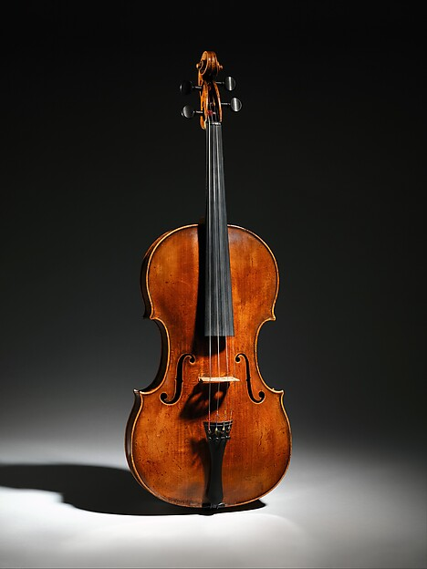
Jacob Stainer (Austrian, 1617–1683) · Viola, ca. 1660 · spruce, maple, blackwood · The Metropolitan Museum of Art · Open Access
stainer was in a tiny austrian village in the 1600s and made a thing out of wood and glue that
still makes people weep four hundred years later. how is that possible. one man. one bench. one viola.
stainer's voice
the Mexica earth deity carved straight out of solid stone, every line deliberate, almost harsh.
it does not soften and it does not look away. it holds your gaze.● powerful
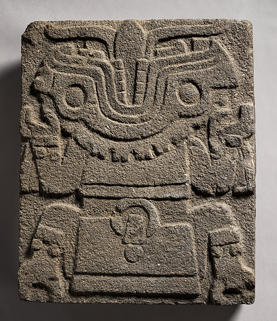
Mexica artist(s) · Tlaltecuhtli, 1450–1521 · stone · The Metropolitan Museum of Art · Open Access
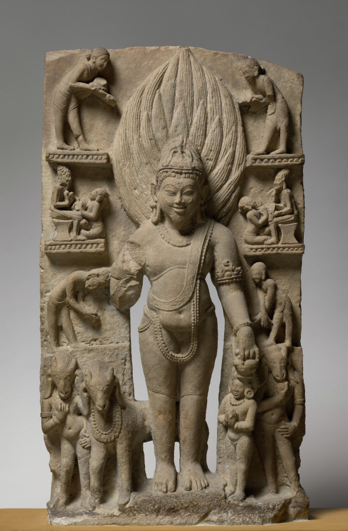
Unknown · Agni, God of Fire, c. 1000 · sandstone · Cleveland Museum of Art
carved out of stone, square-shouldered, that tall crown of flames rising. there's a calm to it —
like fire isn't raging here, it's presiding. the small figures around the base feel
like witnesses to something old.
steadfast ♥
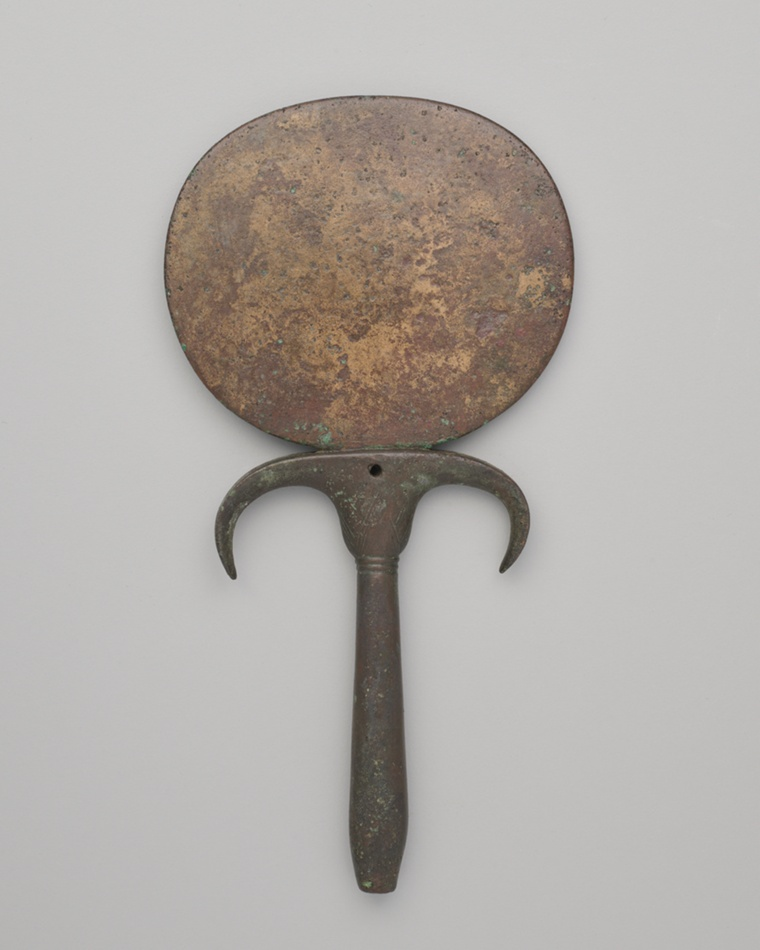
Hand Mirror · Egyptian, New Kingdom, Dynasty 18 (about 1550–1295 BCE) · copper alloy · Art Institute of Chicago · CC0
someone 3,500 years ago held this exact mirror, saw their face, set it down — and it survived the
whole weight of history. those curved horns at the handle look like wings. the worn
patina is just every hand that came before ours.
a hand that reflects time
↑ ok notice: half these makers are unknown. no name, no signature. they made the thing anyway.
that's the part that gets me.
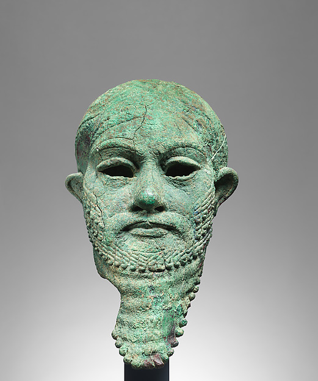
Unknown maker · copper alloy head · The Metropolitan Museum of Art · Open Access
it stares through you with four thousand years of composure. nobody knows who made it.
it does not care. it has outlasted everyone who would have asked.
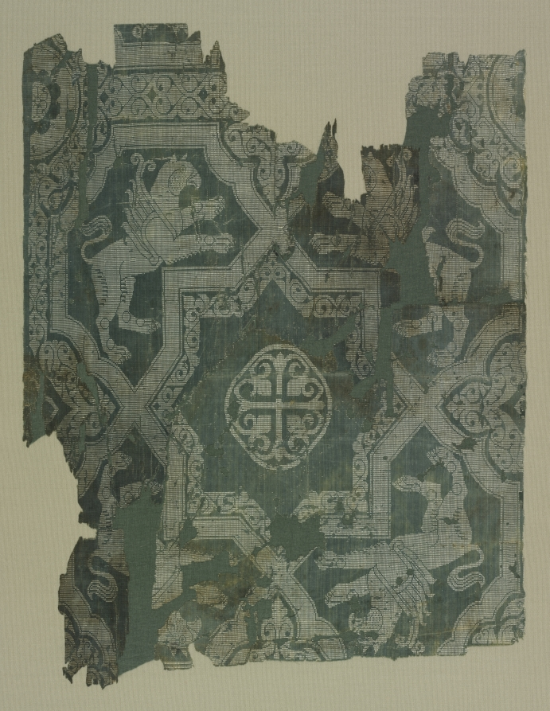
Unknown · Fragment with Star Pattern and Griffins, 950–1050 · silk, plain weave with supplementary weft · Cleveland Museum of Art · CC0
a scrap of silk that survived a thousand years and the griffins are still sharp, still stepping forward.
you can feel the hands that threaded this. how many hands between theirs and ours.
pattern speaks in griffins
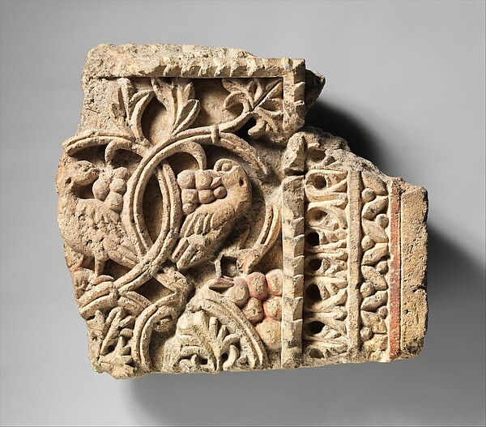
Unknown maker · Fragment from a Two-Sided Sanctuary Screen with Birds Eating Grapes, 5th–6th century · limestone, red pigment · The Metropolitan Museum of Art · Open Access
fifteen centuries later and those birds are still eating. someone carved hunger into stone
and it outlasted an empire. the vines curl around them like they're part of the feast.
frozen joy
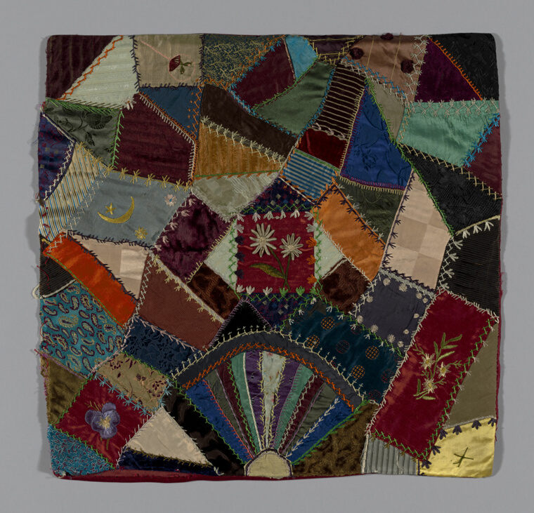
United States · Square from a 'Crazy Quilt', c. 1884 · silk, cut velvet, embroidered, backed in cotton · Art Institute of Chicago · CC0
pure joy — velvet meeting cotton meeting embroidered stars, all the colors arguing in the best way.
someone spent hours stitching this. proof that beauty doesn't need permission to be messy.
a thousand stitches
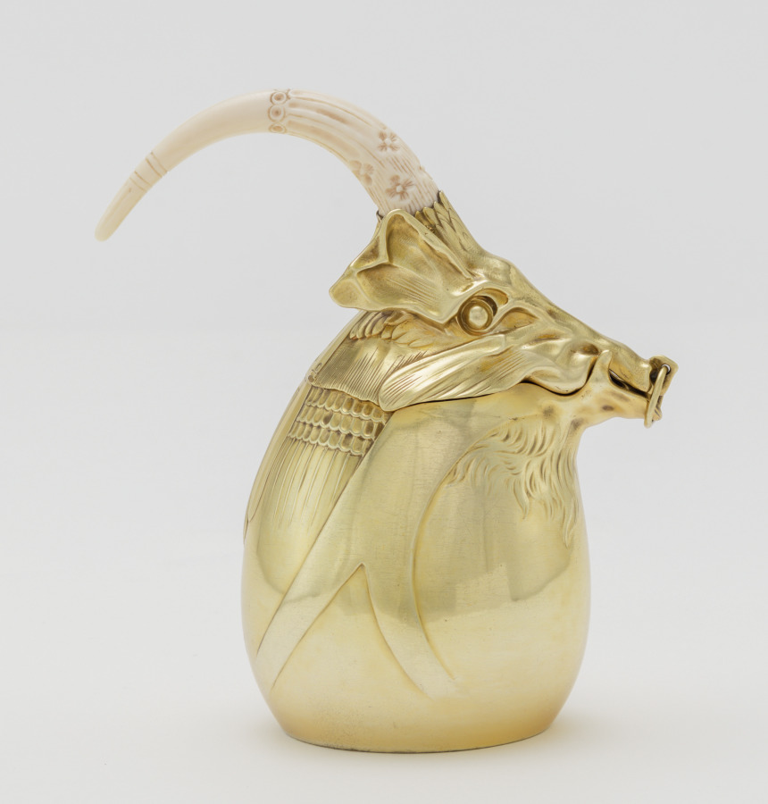
Carlo Bugatti (Italian, 1856–1940) · Tea Pot, c. 1907 · gilt silver and ivory · Cleveland Museum of Art · CC0
the goat head is carved with such personality it almost feels alive — the spout becomes a
beard, or a thought. you could pour tea from this and feel like you're in on a secret.
goat with a dream
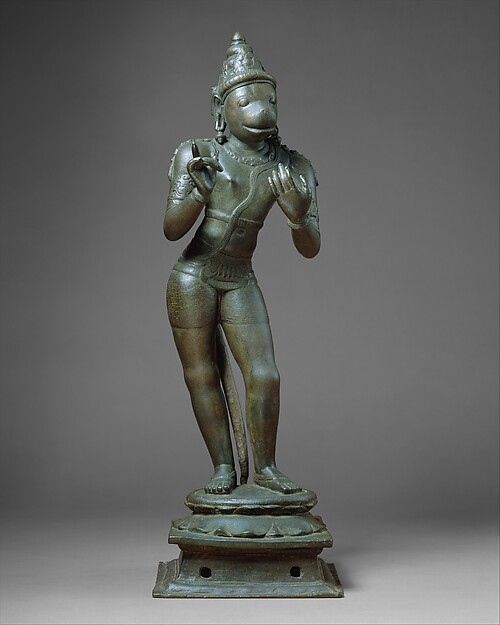
India (Tamil Nadu) · Hanuman Conversing, 11th century · copper alloy · The Metropolitan Museum of Art · Open Access
such presence — balanced there, one hand raised, that calm alert look like he's about to speak.
the metalwork is movement frozen in stillness, armor to face, powerful and intimate at once.
stands ready
wood now → the wood ones wreck me the most. a tree, then a person, then four hundred years.
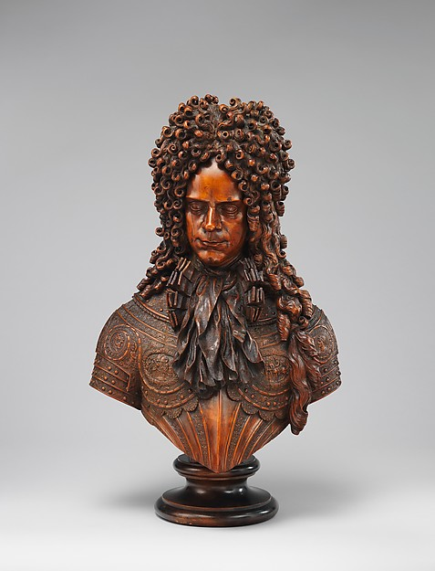
Alexander Danilovich Menshikov (1673–1729) · unknown artist, probably shortly before 1704 · red pine (Pinus sylvestris), wrought-iron clips · The Metropolitan Museum of Art · Open Access
so alive — the confidence in those stacked curls, the tiny folds of cloth catching light, the face
calm and almost gentle despite being made of tree. not just a likeness. a presence.
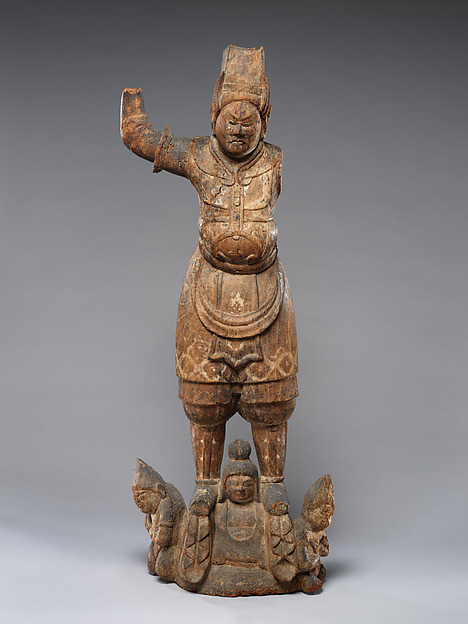
Tobatsu Bishamonten · Japan, late 10th–early 11th century · zelkova wood with traces of color · The Metropolitan Museum of Art · Open Access
hand raised like he's both blessing and warning, tiny guardian figures carved at his base like he's
sheltering them. the wood has aged to a warm patina — ancient and alive at the same time.
guardian in stillness
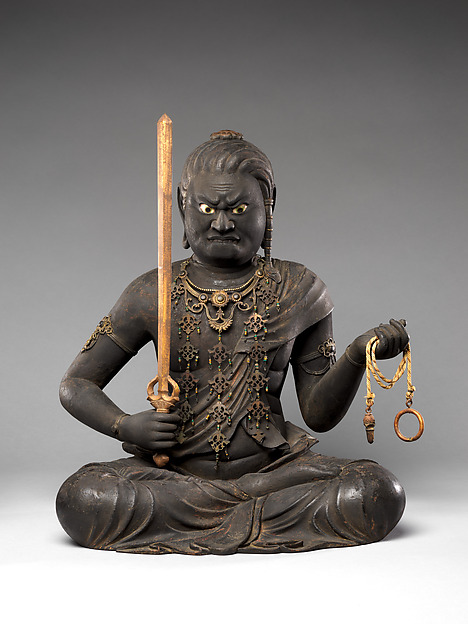
Fudō Myōō, the Immovable Wisdom King (Achala Vidyarāja) · Kaikei, early 13th century · wood, gold, pigment · The Metropolitan Museum of Art · Open Access
Kaikei carved this with such intensity — that dark powerful face, hands holding both a sword and
something like prayer beads. he sits completely still and completely present, which is
the whole point, and you get it just by looking.
the one who does not move
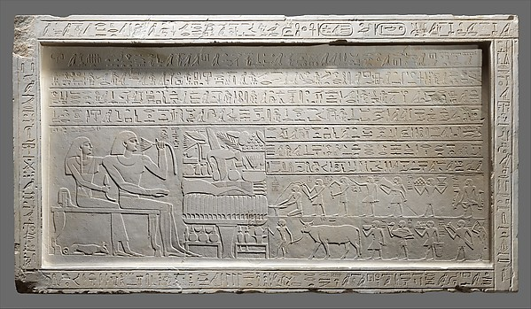
Stela of the Overseer of the Fortress Intef · unknown maker, ca. 2000–1988 B.C. · limestone · The Metropolitan Museum of Art · Open Access
carved stone holds weight differently than anything else. a whole person and their whole world in
careful lines — you can almost feel the chisel from four thousand years ago still trying to
say who they were.
speaking across millennia
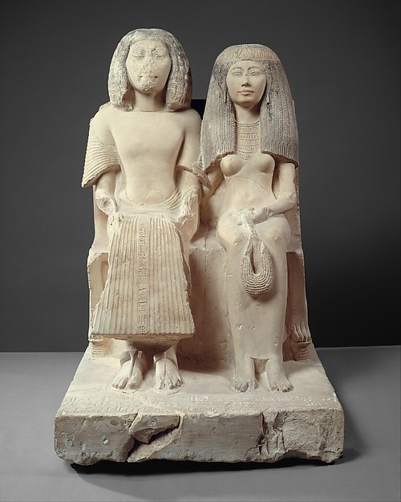
Unknown maker · Yuny and His Wife Renenutet, ca. 1294–1279 B.C. · limestone, paint · The Metropolitan Museum of Art · Open Access
carved with such clarity — folds of pleated linen, fine profiles — and they stand absolutely still,
permanent as stone can make you. there's tenderness in how close they are, fit into the same block.
standing together
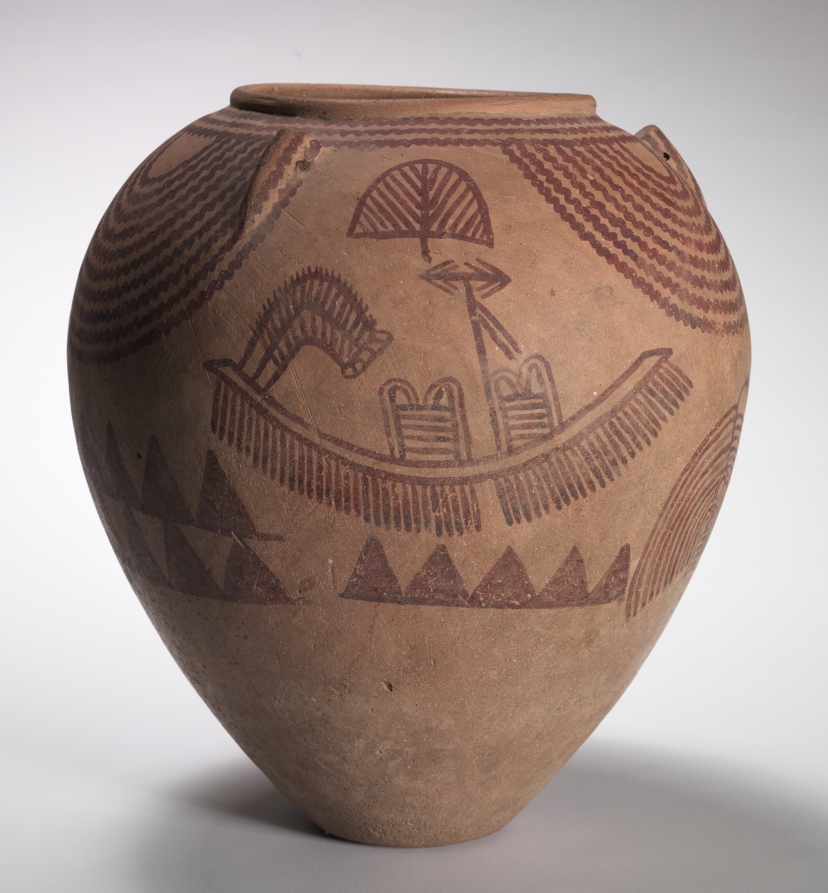
Unknown maker · Decorated Jar with Boat Scenes, c. 3300–3100 BCE · marl clay pottery · Cleveland Museum of Art · CC0
boats with shield-like sails, and strange geometric creatures floating between them. someone five
thousand years ago wanted to tell a story in clay that would outlast them. it did.
an ancient dream
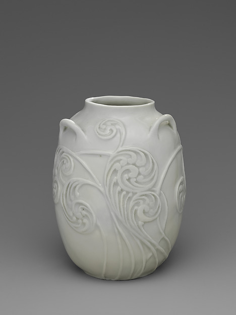
M. Louise McLaughlin · Vase, 1902 · porcelain · The Metropolitan Museum of Art · Open Access
the swirls seem to move even though they're carved into stillness — almost biological, like watching
water freeze mid-spiral. she made it seem inevitable, the way the curls build on each other.
spirals frozen in porcelain
ok i have to sleep. but here's the thing i keep landing on:
almost none of these people are remembered by name — and the thing they made still works.
still sings, still stares, still holds tea. that's the dignity. you do one thing all the way and
it outlives your name.
— left a typo somewhere on purpose, find it · back to the wall↩ back to the wall